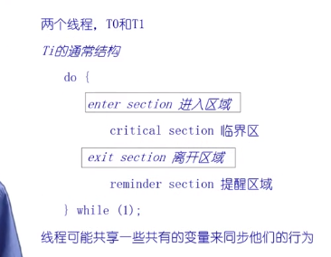
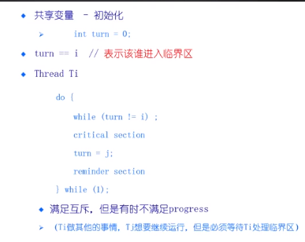

| 创建时间： | 2020/4/8 18:00 |
| 更新时间： | 2020/4/3 20:06 |
| 作者： | lzr |
无忙等待（可选）：如果一个进程在等待进入临界区，那么在它可以进入之前会被挂起
更高级别的抽象
离开临界区
要小心使用


上面这个例子有个问题，那就是如果turn = 1执行完后，轮到turn = 2，turn 2 执行完后，turn 2就不可能再执行，只能等待turn = 1。
且不满足process
共享变量 - 初始化
int flag[2],flag[0] = flag[1]= 0;
Thread Ti
do{
while(flag[j]==1){
flag[i]=1;
critical section;
flag[i]=0;
remainder section
}while(1)
int flag[2],flag[0] = flag[1]= 0;
Thread Ti
do{
flag[i]=1;
while(flag[j]==1)；
critical section;
flag[i]=0;
remainder section
}while(1)
这样又会导致死锁。
int turn;
boolean flag[];
flag[i]=true;
turn=j;
while(flag[j]&&turn==j);
flag[i] = false;
N个进程的临界区
lock_next_pid->Acquire();
new_pid = next_pid++;
lock_next_pid->Release();
class Lock{
int value;
}
Lock::Acquire(){
while(test-and-set(value));
}
Lock::Release(){
value=0;
}
class Lock{
int value = 0;
WaitQueue q;
}
Lock::Accuire(){
while(test-and-set(value)){
add this TCB to wait queue q;
schedule();
}
}
Lock::Release(){
value=0;
remove one thread t from q;
wakeup();
}
// 共享数据（初始化为0）
int lock = 0;
// 线程Ti
int key;
do{
key=1;
while(k==1){
exchange(lock,key);
}
critical section;
lock = 0;
remainder section;
}
优点
缺点